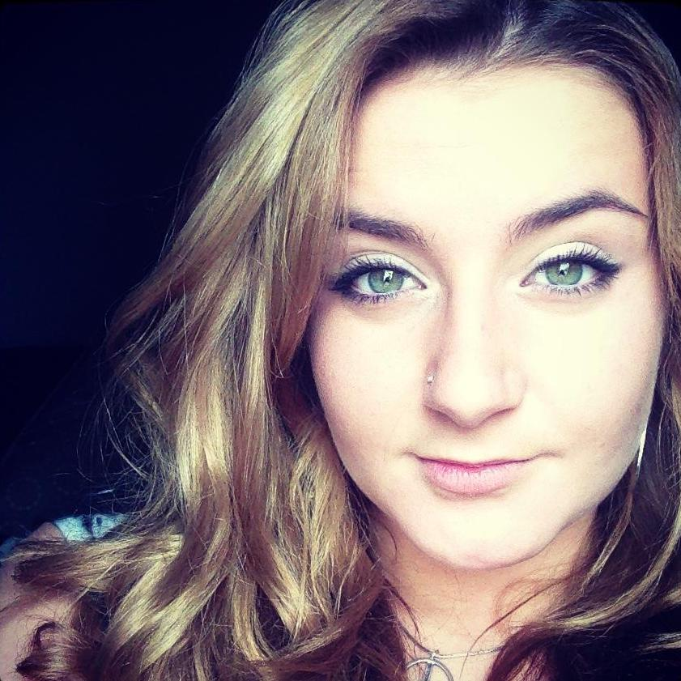
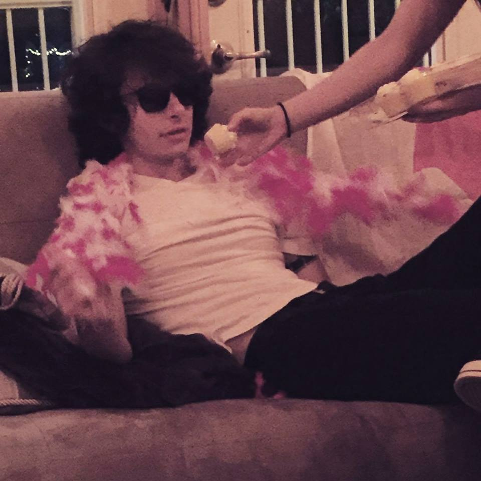
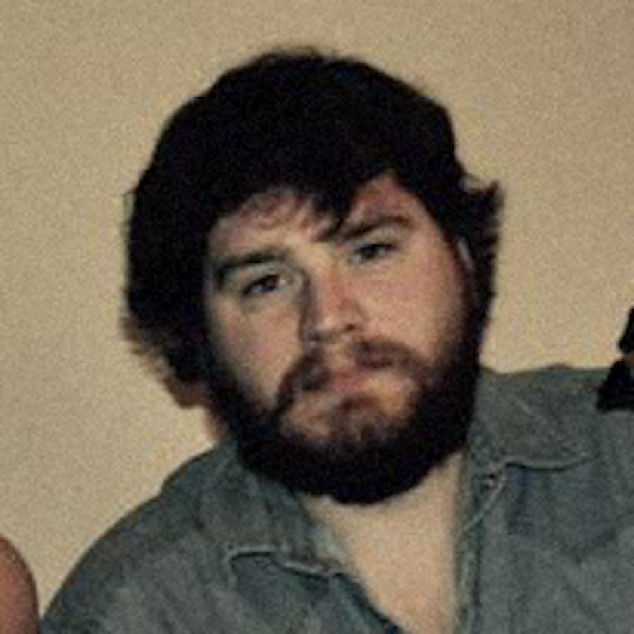

Lia Coppola. I am the lead vocalist for the band. Singing has always been a passion of mine and I really put all of my soul into what I do. Being part of The Outkirts has given me stength and helped me grow as a singer.

Rylan Klapatiuk. It is what it is. I've played guitar since I was 14. Born and raised in Regina, I had to step aside from the musical influences to find my own style and put my effort into perfecting my skills.

Parker Cochrane. As a bass player, I am in charge of keeping tempo and supporting harmony. My bass is always rocking. Working with The Outskirts develps character and builds a family. They say it's all about the bass, hey?